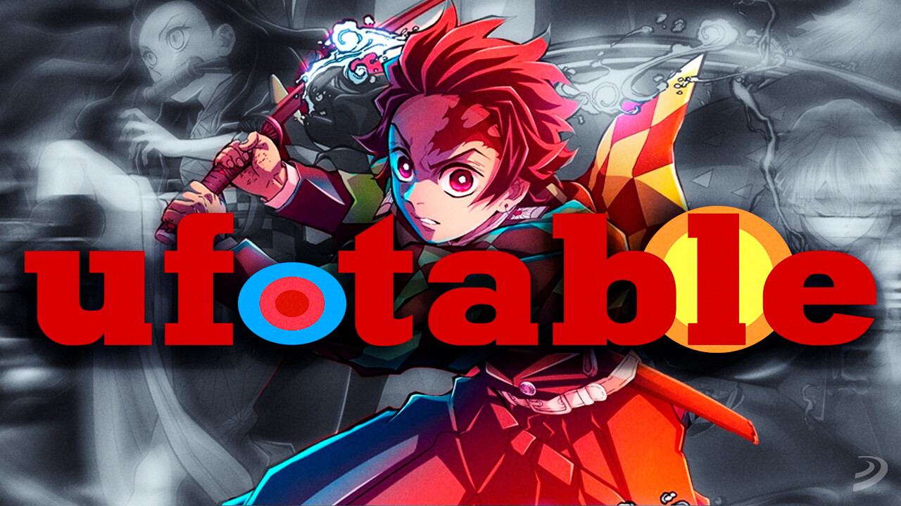

Estudio de Animación de Kimetsu no Yaiba: ufotable
Kimetsu no Yaiba fue animado por el estudio japonés ufotable, conocido por su impresionante trabajo visual y su enfoque en la calidad de la animación. Fundado en 2000 por Hikaru Kondo, ufotable ha ganado reconocimiento en la industria del anime por sus escenas de acción dinámicas, uso de efectos especiales, y su integración fluida de animación 2D y 3D.
Antes de trabajar en Kimetsu no Yaiba, ufotable era ampliamente conocido por su adaptación de la serie Fate/stay night: Unlimited Blade Works y Fate/Zero, donde demostró su habilidad para crear escenas de combate espectaculares. El estilo visual de ufotable se caracteriza por el uso intensivo de efectos de partículas, colores vibrantes y movimientos de cámara dramáticos, lo cual eleva la intensidad de las escenas.
La adaptación de Kimetsu no Yaiba al anime comenzó en 2019 y rápidamente ganó elogios por la calidad de su animación, en especial en sus escenas de batalla. Uno de los momentos más icónicos fue la batalla de Tanjiro contra Rui, la Luna Inferior 5, donde la animación fluida y los efectos visuales impresionantes capturaron la atención de los fanáticos alrededor del mundo. Este nivel de calidad fue posible gracias a los avanzados procesos de producción de ufotable y su compromiso con la excelencia visual.
En 2020, ufotable también produjo la película Kimetsu no Yaiba: Mugen Train, que se convirtió en un fenómeno global y rompió récords de taquilla en Japón y otros países. La película se destacó no solo por su historia y emotividad, sino también por su impecable calidad de animación, consolidando a ufotable como uno de los estudios de animación más prestigiosos de la industria.
La colaboración entre Koyoharu Gotouge, el creador de Kimetsu no Yaiba, y el equipo de ufotable permitió que la serie alcanzara un nivel de popularidad sin precedentes, llevando la historia de Tanjiro y los Cazadores de Demonios a una audiencia global. Hoy en día, ufotable continúa siendo reconocido por su dedicación a la calidad y su habilidad para crear experiencias visuales inolvidables en cada proyecto.